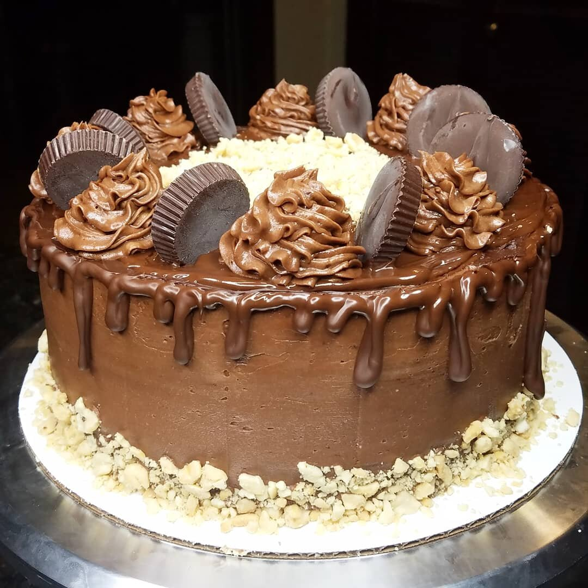
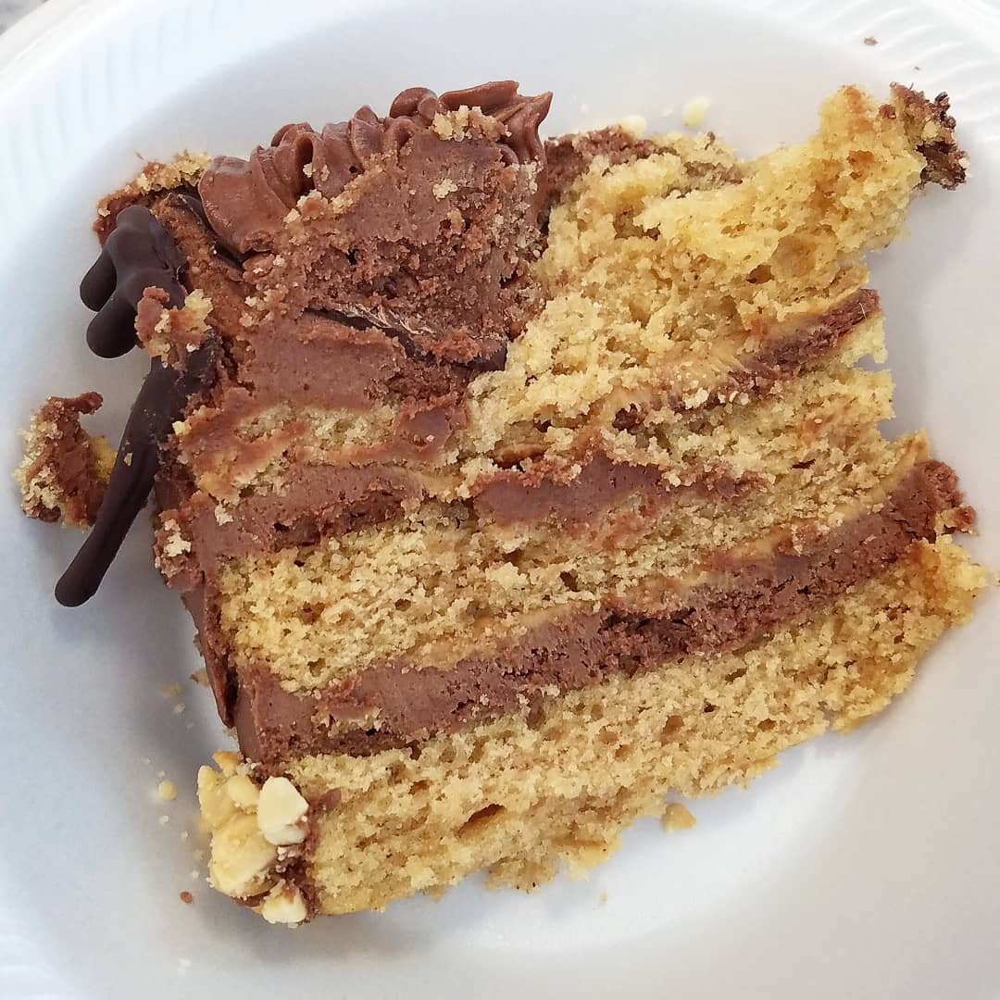

Vegan Peanut Butter Cake


All of a sudden I've manifested this burning desire to bake cakes and I can't get rid of it. I've been baking quite a few cakes, but this vegan peanut butter cake is my favorite of the lot so far. This particular cake is comprised of a base peanut butter cake that is moist, flavorful, and absolutely rich and satisfying. I can't get enough of it! Although the decorating can get a little tedious, the cake itself is easy to bake!
This cake takes about 15 minutes to mix and another 30 minutes to bake. Overall, it's about a 45 minute process. So worth it! I chose to make a 3-layer cake, but you could also use this recipe to bake two, 8x8 inch sheet cakes, or about 24 individual cupcakes. The baking time will vary but the end result will be just as delicious!
For my decorating, I chose to take this in the direction of...Reeses! Vegan Reeses, of course. In between each layer of cake there’s a chocolate frosting and a thin layer of peanut butter. On top is a chocolate drip, crushed peanuts, and vegan chocolate peanut butter cups. The chocolate balances out well with the peanut butter cake. This cake really tasted like a large Reeses cup! A simple vanilla frosting would probably be good, as well. How would you decorate this vegan peanut butter cake?
Try out this luscious cake and let me know what you think!!
Vegan Peanut Butter Cake
Serves: 25
-
2 cups almond milk
-
2 tsp apple cider vinegar
-
1.5 cups sugar
-
1/2 cup vegetable oil
-
3 TBSP peanut butter, melted
-
1 tsp pure vanilla extract
-
2.5 cups all-purpose flour
-
2/3 cup peanut powder
-
1 tsp baking powder
-
1.5 tsp baking soda
-
1/2 teaspoon salt
In a large bowl, combine the almond milk and apple cider vinegar. Whisk and let sit for 5 minutes to curdle like a buttermilk. After curdling, whisk in the sugar, vegetable oil, peanut butter, and vanilla. The mixture will look almost foamy or bubbly.
In a medium sized bowl, combine the flour, peanut powder, baking powder, baking soda, and salt. Once mixed, slowly stir the dry mixture into the wet mixture. Whisk during the combining process to avoid lumps.
Spray three, 9-inch cake pans with nonstick spray. Pour the batter evenly amongst the 3 pans. Bake at 350 F for 24-28 minutes, or until a toothpick comes out clean from the center of the cake. This recipe could be used for other sized cake pans or even cupcakes, but the baking time will vary.
Cool fully before frosting the cake. This cake goes great with chocolate frosting to balance with the peanut butter. For a simple frosting, combine 1/2 cup unsweetened cocoa powder, 2-3 cups powdered sugar, 1 cup softened vegan butter, 1/2 cup vegetable shortening, 1 tsp vanilla extract, and a pinch of salt.